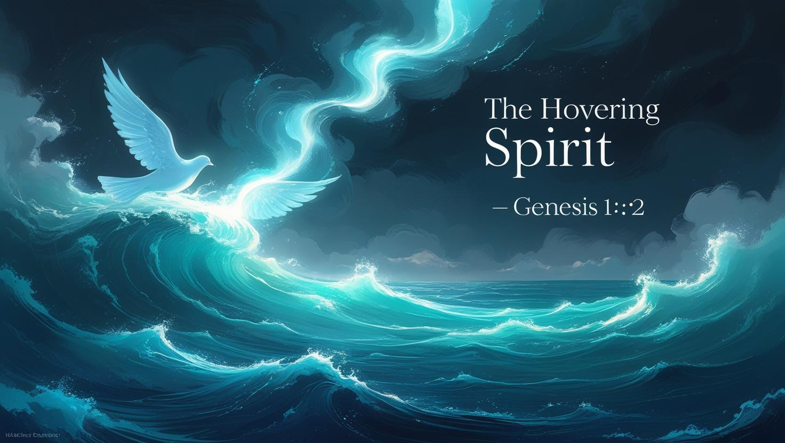
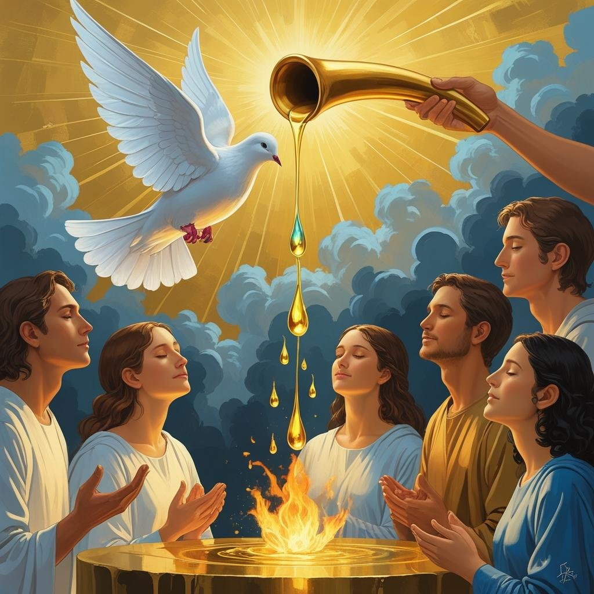
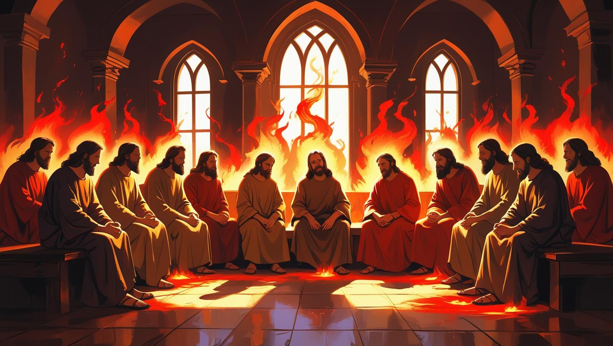
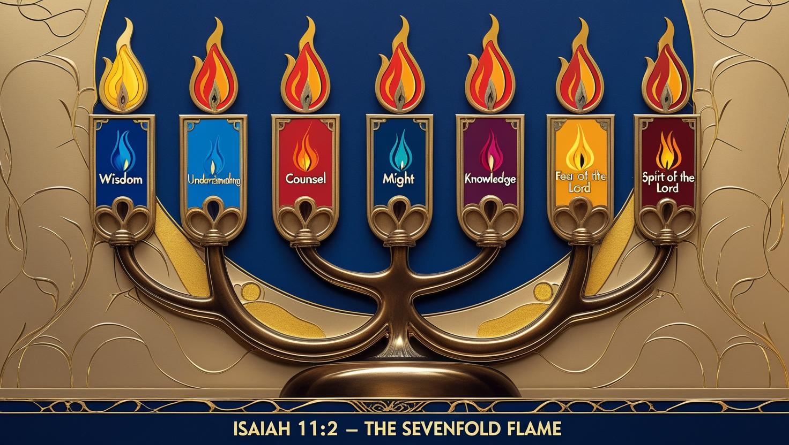

The Spirit hovered over the deep — awakening divine order and life.
From the chaos of creation to Pentecost’s fire — the Spirit is always moving.
Genesis 1:2 reveals the Spirit not as static but in motion — hovering over chaos, initiating divine order. This movement shows God’s Spirit is a first responder to disorder.
"The Spirit of God has made me; the breath of the Almighty gives me life." (Job 33:4). From Adam’s nostrils to your lungs today, the breath of God animates us with purpose.
The dove, oil, and fire are visible signs of the invisible Spirit. In Jesus’ baptism, a dove descends. In David’s anointing, oil flows. At Pentecost, tongues of fire descend upon believers
The same wind that hovered now rushes in Acts 2. It fills the room, empowers disciples, and launches the Church with boldness, miracles, and prophecy.
From Joel’s vision to Revelation’s trumpet blasts, the Spirit always points to Christ, inspires speech, and drives transformation in nations.
7 Manifestations of the Spirit (Isaiah 11:2):
The Holy Spirit hovered, then ignited fire. Today, He hovers again — ready to fill those who wait, burn with those who believe, and speak through those who yield.